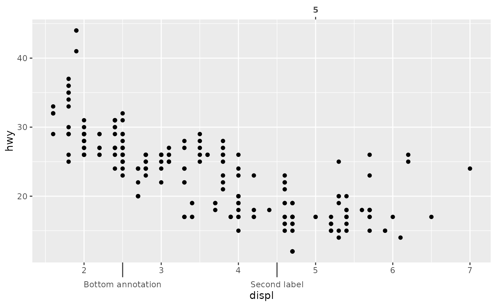
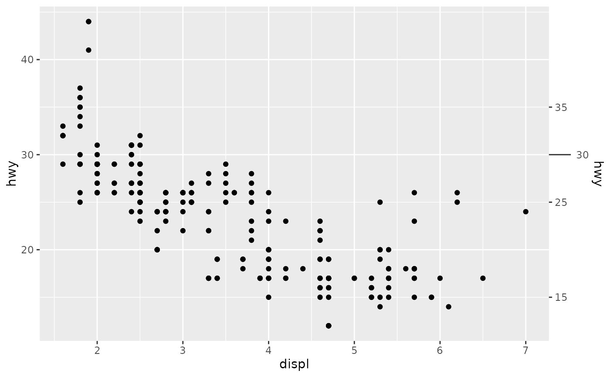
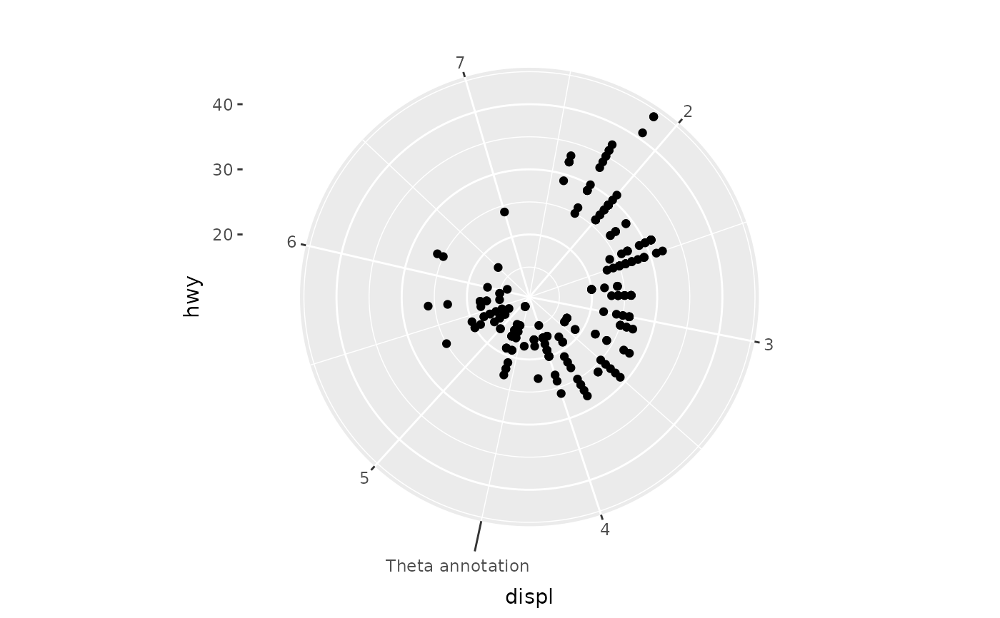
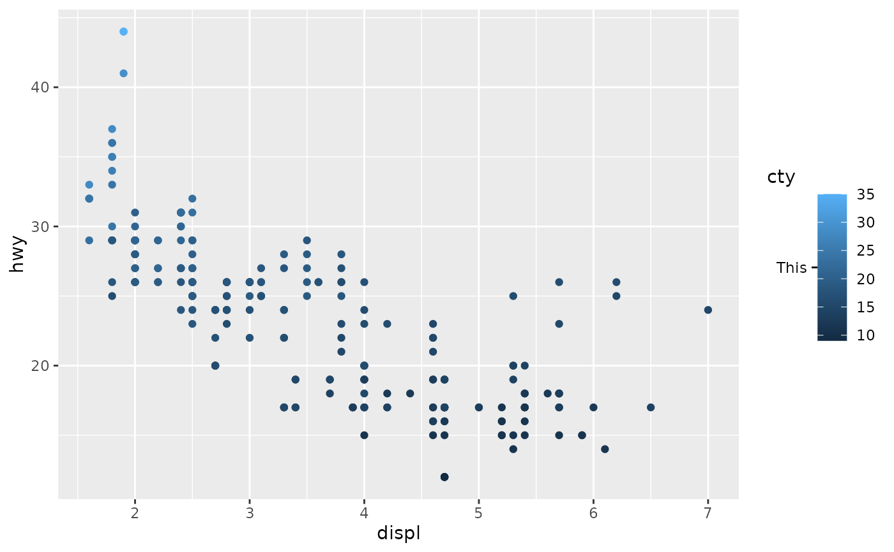

![[Experimental]](figures/lifecycle-experimental.svg)
This axis guide acts as annotation: it draws labels at specified places. It also wraps an inner guide, making the behaviour look like one is 'adding' the annotation on top of the regular guide.
Usage
guide_axis_annotation(
aesthetic,
label = as.character(aesthetic),
...,
key = NULL,
arrow = NULL,
inner = waiver(),
title = waiver(),
theme = NULL,
order = 0L,
position = waiver(),
call = NULL
)
annotate_top(..., position = "top")
annotate_right(..., position = "right")
annotate_bottom(..., position = "bottom")
annotate_left(..., position = "left")Arguments
- aesthetic
A vector of values for the guide to represent.
- label
A
<character[n]>or list of expressions to use as labels.- ...
Additional graphical properties parallel to
aesthetic. Can betext_colour,size,face,hjust,vjust,angleorlineheightfor the labels. Can beline_colour,linewidthandlinetypefor ticks. Settingcolourwill also settext_colourandline_colour. Forannotate_top(),annotate_right(),annotate_bottom()andannotate_left(), arguments are passed on toguide_axis_annotation().- key
A standard key overriding the
aesthetic,labeland...arguments.- arrow
A
grid::arrow()specification. Can beNULL(default) to draw no arrow.- inner
A guide that supports the aesthetic to draw the annotation across. When
waiver()(default), populates aguide_axis_base()except in the"top","right"and"theta.sec"positions.- title
One of the following to indicate the title of the guide:
- theme
A
<theme>object to style the annotation part of this guide differently from the plot's theme settings. Thethemeargument in this guide overrides and is combined with the plot's theme.- order
A positive
<integer[1]>that specifies the order of this guide among multiple guides. This controls in which order guides are merged if there are multiple guides for the same position. If0(default), the order is determined by a hashing indicative settings of a guide.- position
A
<character[1]>giving the location of the guide. Can be one of"top","bottom","left"or"right".- call
A call to display in messages.
Details
Under the hood, this guide is a hybrid composition guide. The theme()
options that govern the styling are partially determined by its consituents.
They are linked below so you can find their 'Styling options' sections.
| Constituent | Description |
| compose_ontop() | Composes the annotation on top of the inner guide |
| guide_axis_base() | The default inner guide |
| primitive_ticks() | Display of the annotation ticks |
| primitive_labels() | Display of the annotation labels |
Styling options per annotation can be set via ... as described above.
The context-agnostic alternative to using theme() is to use
theme_guide():
# Note that `theme` is used *only* for the annotation
guide_axis_annotation(theme = theme_guide(
text = element_text(),
ticks = element_line(),
ticks.length = unit(5, "mm")
))Examples
# Basic plot
p <- ggplot(mpg, aes(displ, hwy)) +
geom_point()
# Typical use
p +
annotate_top(5, face = "bold") +
annotate_bottom(c(2.5, 4.5), c("Bottom annotation", "Second label"))

# If you want to combine them with secondary axes, you must
# set the `inner` argument manually.
p +
scale_y_continuous(
sec.axis = dup_axis(breaks = c(15, 25, 35))
) +
annotate_right(30, inner = "axis")

# Use in theta axis
p + coord_radial() +
guides(theta = guide_axis_annotation(4.5, "Theta annotation"))

# Specialised use as part of other guides
# Note that `guide_colbar` imposes white inward ticks
# We can overrule these impositions with a replacement theme
p + aes(colour = cty) +
guides(colour = guide_colbar(
second_guide = guide_axis_annotation(22, "This", theme = theme_gray())
))
